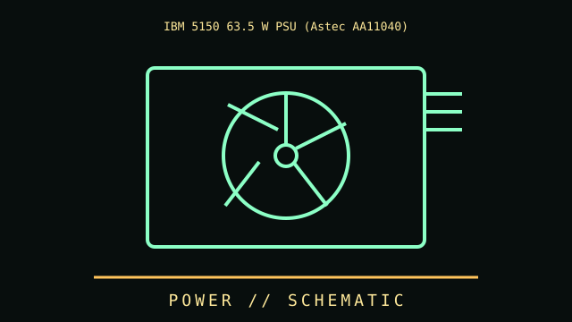

[ ORIGINAL PC POWER UNITS // IDENTIFIED COMPONENT ]
IBM 5150 63.5 W PSU (Astec AA11040)
IBM PC 5150 original power supply family. This file identifies a specific part or clearly bounded model family, rather than an overview of the category.

IDENTIFY THE REVISION: Check the complete product code, suffix, board revision, region, firmware, and date code. Similar names do not guarantee the same hardware.
Part specifications
| Catalog subcategory | Original PC power units |
|---|---|
| Catalog identity | IBM 5150 63.5 W PSU (Astec AA11040) |
| Generation / family | IBM PC 5150 original power supply family |
| Architecture / ratings | Low-output original PC PSU, commonly rated about 63.5 W; 115/230 V selection and output rails are indicated on specific unit label. |
| Interface / fit | Proprietary motherboard power connector and chassis fit; original 5150 connector polarity differs from later ATX design. |
| Variants / field identification | Astec and IBM-branded units can have distinct labels/components; identify manufacturer and service history. |
| Evidence to collect | Photograph the nameplate and PCB labels; record test system, firmware, installed accessories, condition, and manual/datasheet revision used to verify specifications. |
Compatibility, care & service
- Check electrical signaling, pinout, voltage, current, connector, mounting and supported firmware before installation; do not rely on matching shapes alone.
- Inspect physical condition and manufacturer warnings; mains PSUs, CRTs, batteries and spinning media may retain hazardous energy or require specialist service.
- For vintage equipment, use the correct bus generation, BIOS, driver, media type, cable orientation and resource configuration documented for the machine.
- Record measured results separately from the manufacturer's published limits and state the setup and measurement conditions.
Model-specific notes
Proprietary motherboard power connector and chassis fit; original 5150 connector polarity differs from later ATX design.
Astec and IBM-branded units can have distinct labels/components; identify manufacturer and service history.
Sources & further reading
- Manufacturer / standards reference — IBM 5150 63.5 W PSU (Astec AA11040)Source for product-family specifications; compare exact suffix, revision, and region with the unit label.
- Manufacturer / standards reference — IBM 5150 63.5 W PSU (Astec AA11040)Source for product-family specifications; compare exact suffix, revision, and region with the unit label.
Links lead to manufacturer or standards references where available. If a source covers a family, use the exact model's manual as the final authority.